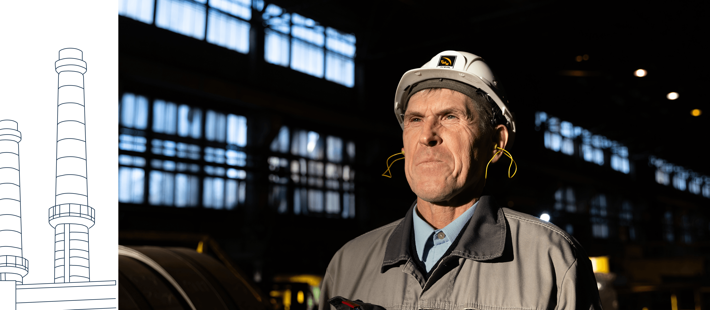

Валерий Александрович Зюзёв
Валерий Александрович Зюзёв. «Понял, что надо менять привычки»
 Валерий Александрович Зюзёв
Валерий Александрович Зюзёв
Дата рождения: 04.04.1961. Трудовая деятельность: Трубоэлектросварочный цех № 2 (ТЭСЦ-2), затем — в управлении информационных технологий начальником участка технологической автоматики. Ныне ведущий инженер отдела промышленной автоматизации ТЭСЦ-2. Стаж работы на СТЗ — 40 лет. «Заслуженный работник ТМК». Наставник молодых рабочих, участник легкоатлетических пробегов, соревнований СТЗ.
«Вам бы 30 лет назад приехать, — говорил Валерий Александрович при первом знакомстве, — с отцом поговорить, с моим дядькой. Вот они бы все и рассказали. Они — рассказчики, а я — нет».
Конечно, он скромничал. Валерий Александрович — интересный рассказчик, подкупает своей простотой и естественностью. На заводе трудно найти более ответственного работника, а дома он — любящий муж, отец и дедушка.


 Татьяна
Татьяна Фоминых
Валера больше всех из ныне живущих Зюзёвых на заводе проработал. Сразу после института сюда пришел.
 Валерий
Валерий Зюзёв
У меня же все в роду электрики. Куда мне было еще идти? Младший брат отца Анатолий Михайлович закончил УПИ (Уральский Политехнический Институт, ныне УрФУ, Уральский Федеральный Университет), и я туда пошел, когда десять классов отучился. Все-таки лучший вуз Екатеринбурга. Даже сомнений не было. Практику проходил сначала в Первоуральске, потом на других трубных заводах. Мне эта работа понравилась, интересная.
Конечно, меня всегда грело, что отец, дед и прадед здесь работали. Раньше очень трудно было устроиться на завод. Тогда по распределению работу получали, и приходилось долго ждать. Папа в свое время писал письмо от завода, чтобы меня сюда перевели.
Помню, как отец меня еще маленьким на завод привел. Тут во дворце спорта на стапелях стояли статуи бегущих спортсменов с пятью кольцами, и вот мы туда с ним залезали. Такое было развлечение. Вообще тогда на завод проще пройти было. Я сам ребят из института водил. Интересно же было посмотреть, как из болванки делается труба. Причем ударным методом.
Вот еще воспоминание из детства. Пришли мы однажды в какой-то машзал. Отец говорит: «Сейчас на кран поднимемся. Только с делами разобраться надо». А какие у него были дела? Наверное, документации куча, надо все согласовать. Папа в командировках практически жил. Бывает, ждем-ждем-ждем, а он приедет, выспится и снова уезжает. И когда он меня с собой на завод брал, это был праздник, конечно. Вот мы с ним на кране и катались.
Когда я пришел устраиваться на завод, отец говорит: «Пойдешь на Т-2 (Трубопрокатный цех № 2 — прим.)». — «Так Т-1 (Трубопрокатный цех № 1 — прим.) ближе», — возражаю. Он в ответ: «Разве этим место оценивается?» А там уже разговоры пошли, что в Т-2 начальник сменился, не надо мне туда. Но я приехал, меня встретил мастер Самойлов Александр Иванович. Я тогда еще для себя отметил: когда на новое место приходишь, важно, кто и как тебя встречает. Все забудется, а этот момент в памяти останется. Пришел я, а костяк в цеху уже собран. Мне 22-23 года, а там ребята заметно постарше, у кого-то уже дети. Они все знают, все умеют, амбициозные были. Я, правда, тоже про себя так считал. Но в коллектив влился легко.
Мои трудовые будни — самые обычные. Я сейчас ведущий инженер, отвечаю за контроль и организацию ремонта. Сейчас мы в новой системе много работаем. Узнаю у сменных мастеров, есть ли замечания по стану, докладываю руководству. А дальше, в зависимости от того, где ремонты идут, хожу, смотрю электрооборудование, составляю отчеты по устранению неисправностей.
В выходные никаких особенных занятий. Иногда можно попаять, подымить канифолью. Раньше это даже частью работы было. Ячейки, «операционички» (операционные усилители, которые применялись в аналоговых схемах управления приводами. Сейчас используются цифровые схемы управления — прим.) ремонтировать. Мы с братцем так усилитель собрали, вон он стоит в колонке. Он фрезеровал все детали, потом спаяли, собрали. Это потом усилители появились, все их стали покупать. А раньше-то ничего не было.
Еще внуки на выходных приезжают. Расспрашивают постоянно обо всем: «Деда, зачем нужны птицы?» Отвечаю: «Чтобы уничтожать насекомых». А кто придумал птиц? Как вариант ответа — Бог. Ответы их устроили. Сам, не скажу, что религиозен. Когда припрет — никуда уже не денешься. А так — просто живем.
Татьяна Фоминых
Валеру в семье очень оберегали. Помню, приходила к ним в гости на Ленина, 9. Ковры у них такие пушистые, очень мне они нравились. Выпуклые такие, с рисунком. Прямо зависаешь над ними, водишь рукой. И вот, бывало, собираюсь домой, говорю Валере: «Пойдем, проводишь немножко». Дойдем до ближайшего перекрестка, и он: «Мне дальше нельзя». Я ему: «Да что ты, никто не узнает». Но Валера дальше не шел. С детства у него ответственность была перед теми, кому дал слово.
Ту квартиру, где Александр Михайлович жил, Валера сохраняет практически в нетронутом виде. Все вещи стоят, как при жизни родителей, на своих местах. Такой дом-музей. Валерий вообще любит старые вещи. Хотели ему обновить лыжи, а он говорит: «Есть же лыжи, на которых папа ходил, чем не лыжи?!»
Валерий Зюзёв
Про это история есть. На юбилей отец и дядя Алеша решили мне купить новые лыжи. Мол, сколько уже можно на старых бегать. Взяли палки, пластиковые лыжи, ботинки. Померили: ботинки жмут. Пришлось бежать обратно в магазин, менять. Это, конечно, особенные лыжи: подарок на юбилей. Хотя я сейчас опять на деревянных хожу. На них все проще. Мазать не надо, в горку подниматься легче. Скорость у них поменьше, но мне сейчас скорость особо и не нужна.
Татьяна Фоминых
Как сын старшего брата, Валера теперь присматривает за всей родней. Я как-то уехала отдыхать, так он мне в первый же день позвонил, мол, как ты там, все ли нормально? Где были, что делали? И сразу о своих делах отчитывается. Когда-то его отец Александр Михайлович за всеми присматривал, а теперь — он.


 Александра
Александра Зюзёва
Отца, наверное, можно назвать строгим. Но что значит вообще быть строгим? Это же не обязательно лишать человека выбора. Родители, например, никогда мне не указывали, чем заниматься. Всегда были варианты. Кружки, танцы, художки, музыкалки — все, что пожелаешь. Строгость может быть в том, что если ты взялся за что-то, пообещал — сделай все, чтобы сдержать слово, или не обещай вовсе.
Валерий Зюзёв
Да какая нынче строгость. Взять тот же завод. Люди сейчас такое не воспринимают. Просто увольняются и все. Вот пришел ко мне на автоматику паренек. Сначала поступил в Горный, потом в УПИ. Отучился пять лет. Даже не знаю, есть ли у него диплом. Работать, получать зарплату ему было интересней. Раньше люди все-таки старались держаться своего места на СТЗ. А теперь, чуть что не так — развернулся и уехал. Это расстраивает немножко.
У нас на заводе разные курсы проходят. Один назывался «Меняйте свои привычки». Поначалу я несерьезно отнесся. А потом сходил, послушал и интересно стало. Теперь сам понимаю, что привычки действительно менять надо. Считаю, что это нормально. И сам себя убеждаю. Все, что ни делается, — к лучшему.
Александра Зюзёва
Папа по жизни человек очень оптимистичный, не унывающий. Говорит, надо уметь к каким-то вещам относиться проще. Не бывает непоправимых ситуаций: всегда можно найти выход или попросить помощи. Вот простой пример. Посадили картошку, а она вся заросла, что делать? Урожай-то под угрозой. Ничего страшного, говорит папа, трава растет, значит и картошка вырастет. А если жуки съедят? Ну, значит, картошка уродилась хорошая, вкусная.
Валерий Зюзёв
Есть ли у меня мечта? Мечт-то много. Но рассказывать не буду, иначе не сбудутся. Миша — мой внук, вот приехал и говорит, мол, у него две мечты и обе плохие. Первая — в компьютерные игры играть. Вторая — сладкое кушать. Его мама согласилась: действительно плохие мечты. Так что надо менять мечты иногда.
Хочется, чтобы внуки умными выросли, грамотными, готовыми делиться с другими тем, что сами умеют. Чтоб поддерживали друг дружку. А главное, чтобы каждый из них чувствовал себя человеком.
 Описание фотографии
Описание фотографии
Татьяна Зюзёва 


Александра Зюзёва